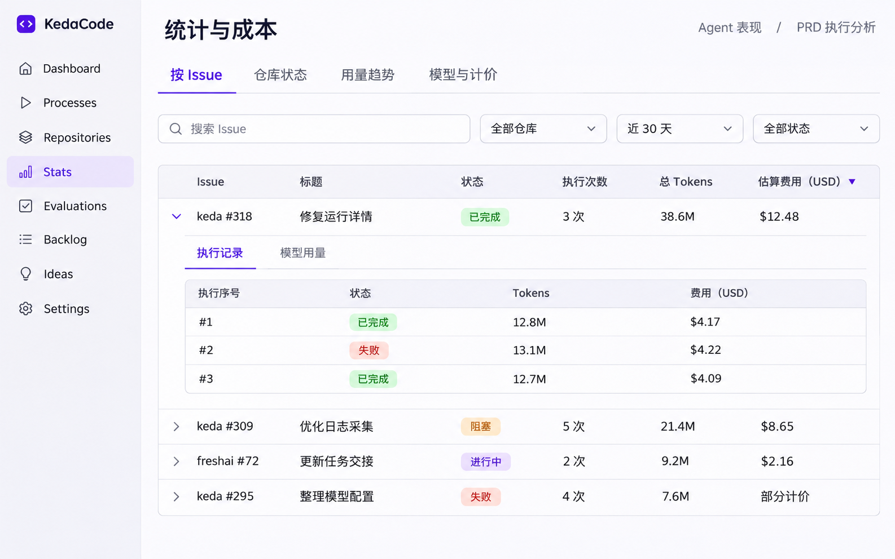
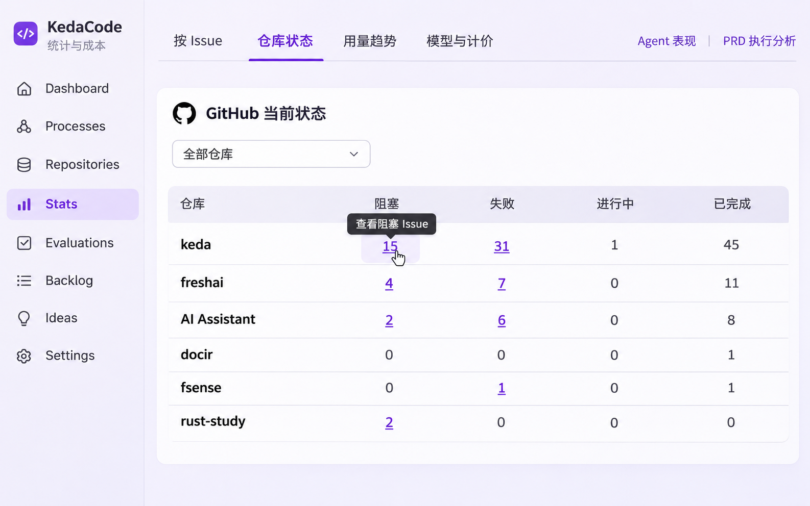
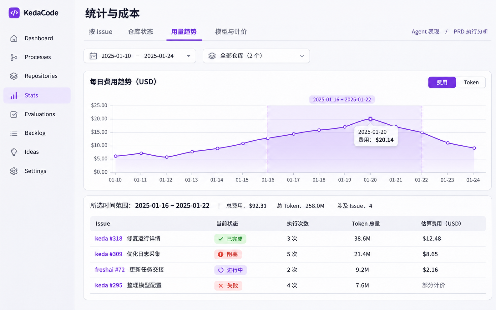
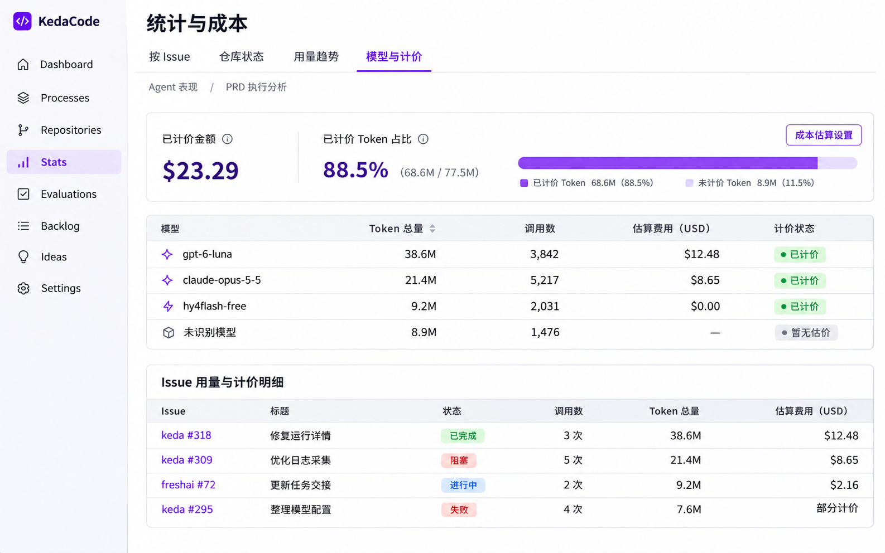
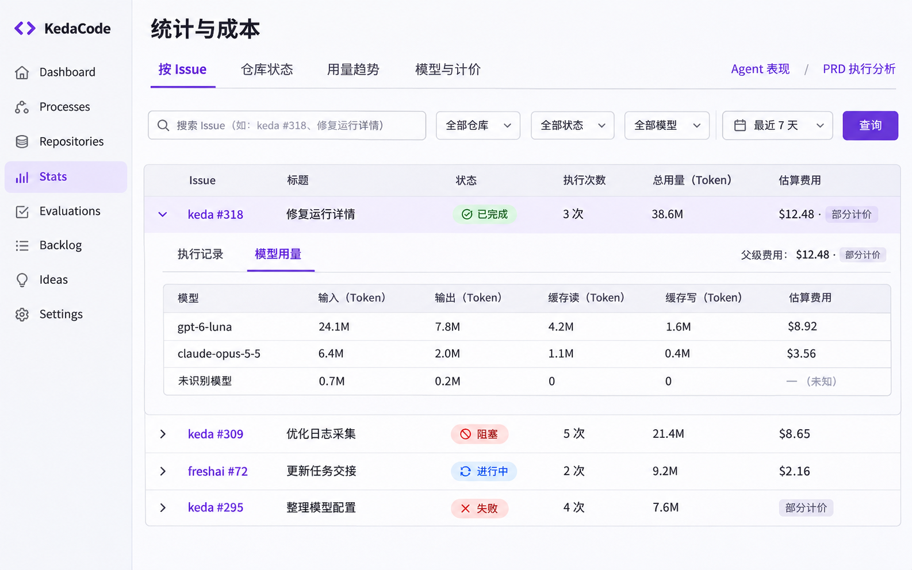

<!doctype html><html lang="zh-CN"><meta charset="utf-8"><meta name="viewport" content="width=device-width, initial-scale=1"><title>统计与成本原型</title><style>body{margin:2rem auto;max-width:100rem;padding:0 1rem;font:16px system-ui;background:#f5f5fa;color:#191925}img{width:100%;display:block;border:1px solid #dedee9}section{margin:2rem 0}</style><main><h1>统计与成本原型</h1><p>静态视觉方案，使用示意数据。<a href="prototype.md">方案说明</a></p><section><h2>按 Issue · 执行记录</h2><a href="assets/01-issue-runs.png"></a></section><section><h2>仓库状态</h2><a href="assets/02-repository-status.png"></a></section><section><h2>用量趋势</h2><a href="assets/03-usage-trend.png"></a></section><section><h2>模型与计价</h2><a href="assets/04-model-pricing.png"></a></section><section><h2>按 Issue · 模型用量</h2><a href="assets/05-issue-models.png"></a></section></main></html>
